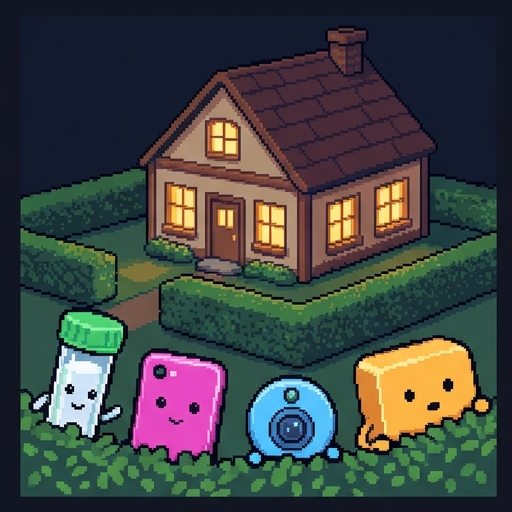
Nobody Asked Nell
Nell has never taken a DNA test, joined a social network, or bought a smart gadget.
Other people's gadgets know a great deal about her anyway. You will find out how, and decide whether anyone violated her privacy.
Nell has never taken a DNA test, joined a social network, or bought a smart gadget. Other people's gadgets know a great deal about her anyway. You'll find out how, and decide whether anyone violated her privacy. Whenever it's your turn, I'll stop and wait for you.
Use → (or Next) to advance and reveal points. F = fullscreen.
Where You Stand Now
Rate each statement. There are no right answers, and you'll rate them again at the end.
Before we start, tell me where you stand. Rate each of these five statements. There are no right answers, and you'll rate them again at the end. Press Submit when you're done.
If I never share my data, my privacy is safe.
My DNA results are mine to share with whoever I choose.
Guessing a fact about someone from statistics does not invade their privacy.
It is worth everyone giving up some privacy if it catches violent criminals.
A group, such as a family or a tribe, can have a right to privacy that no single member has.
Saved. Now, meet Nell.
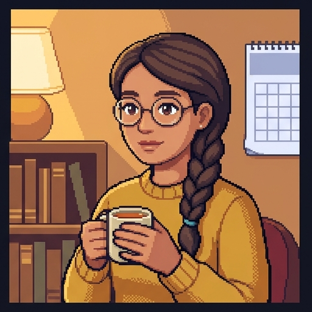
Meet Nell
Nell is careful with information about herself.
Nell is careful with information about herself.
- She reads the terms before she signs up for anything. Usually she clicks "No."
- She has no social media accounts, no fitness tracker, and no smart speaker.
- She pays in cash when she can, and she keeps a paper calendar.
- She believes that if she shares nothing, nobody can learn anything about her.
Privacy is people's claim to decide when, how, and how much about them reaches others.
The Control View
Nell's belief rests on a common idea of what privacy is. Call it the control view.
Nell's belief rests on a common idea of what privacy is. Call it the control view.
- In 1967 the scholar Alan Westin defined privacy as people's claim to decide when, how, and how much about them reaches others.
- On this view, your privacy is violated when information about you is taken or passed on without your say.
- The tool that protects it is consent. Nobody may collect or share your information unless you agree.
- Most privacy rules work this way. Every "I agree" button is asking for your consent.
What Counts as a Violation?
Pick an answer.
Someone learns a fact about you that you find embarrassing
A company earns money from information you gave it freely
Your information is taken or shared without your agreement
Information about you is stored somewhere outside your home
The control view asks one question: did you agree? Next, meet the first gadget.
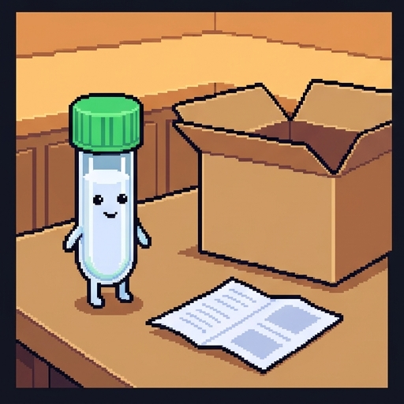
Cousin Cora's Kit
Meet Tube, a DNA test kit. Tube belongs to Nell's cousin Cora.
Meet Tube, a DNA test kit. Tube belongs to Nell's cousin Cora.
- Cora wants to learn about her ancestors. She spits in the tube and mails it to a testing company.
- Cora reads the terms and agrees to them. She also ticks the box to be matched with relatives.
- Nobody asks Nell, because it is Cora's spit.
- Then Tube says something Nell did not expect. "I know a bit about you now, too."
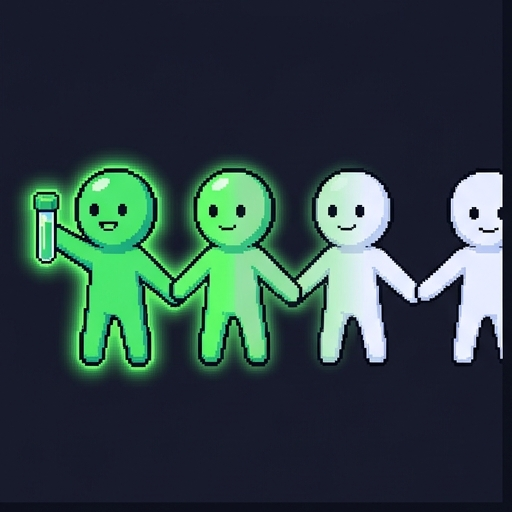
Your DNA Is Not Only Yours
Here's why Tube can say that.
- DNA is the set of instructions in your cells, inherited from your parents. Relatives carry copies of the same stretches.
- You share about half your DNA with a parent, child, brother, or sister, and about one-eighth with a first cousin.
- So Cora's result is partly a result about Nell. It can show who Nell is related to, and some health risks that run in the family.
- Cora had every right to share her own DNA. But it is shared data: she could not share hers without sharing some of Nell's.
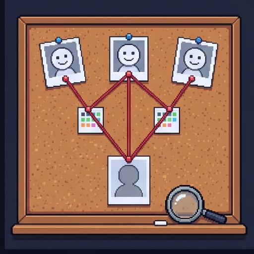
Found Through His Cousins
This is how police solved one of the best-known unsolved cases in the United States.
This is how police solved one of the best-known unsolved cases in the United States.
- The Golden State Killer committed murders and rapes in California in the 1970s and 1980s. For decades nobody knew who he was.
- In 2018 investigators uploaded DNA from a crime scene to a family-history website where people search for relatives.
- It matched several of his distant cousins. Investigators built family trees for four months until one name was left.
- He had never taken a DNA test. His cousins had, and that was enough.
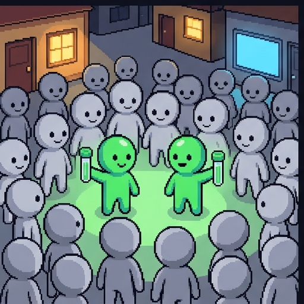
The Few Decide for the Many
Cora is not unusual. Here's how far a few tests can reach.
- A 2018 study looked at one database holding the DNA of 1.28 million people.
- It estimated that about 60% of Americans of European descent already had a third cousin or closer in it.
- A match is a lead, not an answer. Finding the person still takes detective work, as it did that year.
- The scholars Solon Barocas and Helen Nissenbaum call this the tyranny of the minority. A few people who say yes decide for everyone.
Decision Point: Cora's Choice
Cora took the test and agreed to be matched with relatives. Did she do anything wrong to Nell? This one isn't graded. Pick the answer closest to your view, and read its note.
No. It was Cora's own DNA, and she may share it.
No, but the company should not let relatives be traced.
Yes. She should have asked her family first.
It depends on what the data is used for.
The control view has a clear answer. But Nell can now be traced through Cora. Next, a gadget that works by guessing.
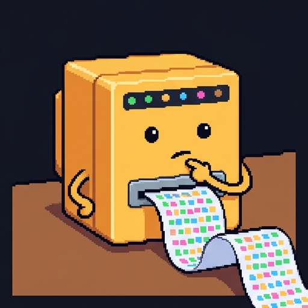
The Guessing Machine
Meet Tally. Tally has never seen any information about Nell. Tally works by guessing.
Meet Tally. Tally has never seen any information about Nell. Tally works by guessing.
- Tally studies millions of people who do share their information, and looks for patterns.
- People who buy certain things, live in certain places, or know certain people tend to be alike in other ways too.
- Working out something you were not told from things you do know is called inference.
- Give Tally a few facts about Nell, and Tally will infer the rest from people like her.
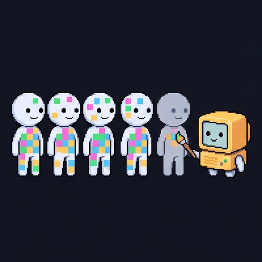
People Like You
Does this really work? Here's a study.
- In 2013 researchers studied about 58,000 volunteers who shared their Facebook "likes" and answered questions about themselves.
- A computer learned which likes went with which traits. Then it predicted people's traits from their likes alone.
- Shown one gay man and one straight man, it picked which was which 88% of the time. It did about as well on political party.
- Most of the likes had nothing obvious to do with sexuality or politics. The patterns came from other people who had shared both.
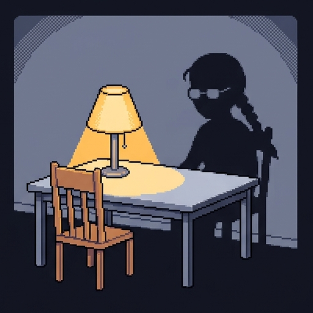
A Profile of Someone Who Never Signed Up
Meet Buzz, a phone. Buzz belongs to one of Nell's friends, and Buzz has Nell's number.
Meet Buzz, a phone. Buzz belongs to one of Nell's friends, and Buzz has Nell's number.
- Many apps ask to upload your contact list. When Nell's friends tap "Allow," the app learns her name, her number, and who knows her.
- In 2014 about 270,000 people took a personality quiz on Facebook. The quiz app also collected data on their friends.
- By Facebook's own estimate, that gave the political firm Cambridge Analytica data on up to 87 million people.
- The friends had agreed to nothing. Their information arrived through someone else's "Allow."
What They Know About Nell
Your turn to explore. Nell shared nothing. Switch on what other people did, and watch her profile fill in. When you're ready, press Continue.
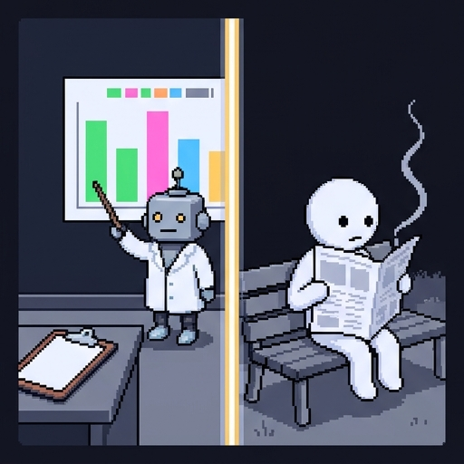
Objection: A Good Guess Is Not a Violation
Defenders of the control view have a strong reply. It starts from an example by the computer scientists Cynthia Dwork and Aaron Roth.
Defenders of the control view have a strong reply. It starts from an example by the computer scientists Cynthia Dwork and Aaron Roth.
- Suppose researchers study thousands of volunteers and show that smoking causes cancer.
- By inference, an insurer now believes something new about every smoker, even those never in the study.
- Most people would not say the study invaded those smokers' privacy. Nothing of theirs was taken.
- So learning about someone from other people's data is not always a violation. The hard part is saying when it is.
Taking a Secret vs. Guessing It
Nell keeps a diary. Compare two ways a stranger could come to know what is in it.
Nell keeps a diary. Compare two ways a stranger could come to know what is in it. First, taking, which is a breach. Someone reads the diary without asking. Nell's own information has left her control. The control view calls this a violation, and almost everyone agrees. Second, guessing, which is an inference. Tally never opens the diary. It predicts what Nell wrote from people like her, and is usually right. The control view finds no violation. Critics reply that the stranger knows the secret either way.
Someone reads the diary without asking. Nell's own information has left her control.
The control view calls this a violation, and almost everyone agrees.
Tally never opens the diary. It predicts what Nell wrote from people like her, and is usually right.
The control view finds no violation. Critics reply that the stranger knows the secret either way.
The Locked Diary
Someone ends up knowing a secret of Nell's. Did they take it, or guess it? Sort each example into a column, then press Check answers.
Taking (a breach)
Guessing (an inference)
A coworker reads Nell's diary while she is out at lunch
A hacker copies Nell's medical file from her clinic's computer
A thief steals Nell's phone and reads her texts
Tally never opens the diary, but predicts what Nell wrote from people like her
An insurer predicts Nell's health risks from a study of thousands of other people
A shop guesses that Nell is pregnant because other shoppers who bought the same things were
Guessing works from other people's data, so nothing of Nell's was taken. That's why guessing is the hard case for the control view.
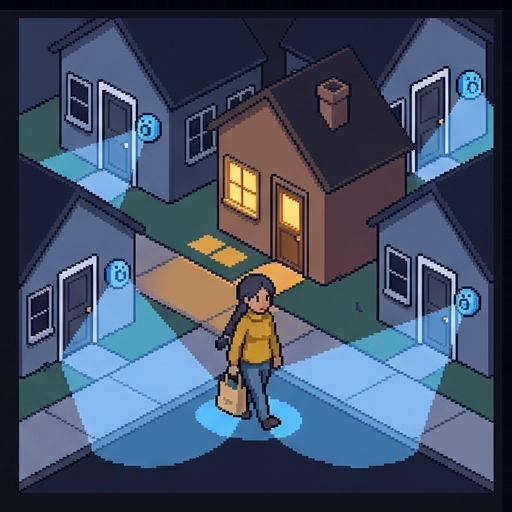
The Neighbors' Doorbells
Meet Peep, a doorbell camera. Peep belongs to the family across the street.
Meet Peep, a doorbell camera. Peep belongs to the family across the street.
- Peep records everyone who passes, and saves the video with the company that made it.
- The neighbors agreed to this when they installed Peep. It is their door and their camera.
- Four houses on Nell's street have a camera like Peep. Together they see her leave and come home every day.
- Nell owns no camera and was never asked. Call this someone else's device: a gadget that records Nell herself, on its owner's consent.
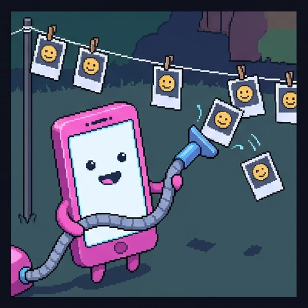
Your Face, From Someone Else's Photos
Cameras can also learn your face from photos you never took.
- Face recognition software matches a photo of a face against a collection of photos whose names are known.
- One US company, Clearview AI, built its collection by copying billions of photos from public websites and social media.
- You may be in that collection if anyone posted a public photo with you in it, such as a friend's party pictures.
- Regulators in Europe have fined it over €90 million. In the US, police and federal agencies such as ICE are its main customers.
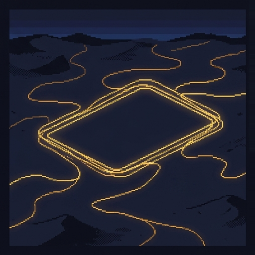
A Secret That Belonged to a Group
Sometimes the secret isn't one person's at all.
- Strava is an app that records where people run and cycle. In late 2017 it published a world map of all its users' routes combined.
- No names were shown. Each route was blended in with millions of others.
- In January 2018 a student spotted bright loops in empty deserts, in the shape of military bases. Soldiers had jogged around them.
- No single runner was exposed. The group was, and its secret showed only when everyone's data was put together.
Three Ways to Learn About Nell
Pick the way each one happens.
Pick the way each one happens. For each line, choose an answer from the menu, then press Check.
Cora's DNA test shows who Nell's relatives are.
shared data
Tally predicts Nell's politics from shoppers who resemble her.
inference
The neighbors' cameras record Nell walking home.
someone else's device
An insurer raises a smoker's price after a study of other smokers.
inference
Cora's DNA is shared data. Tally and the insurer both use inference. The cameras are someone else's device. Next, what could be done about all this?
Some privacy belongs to groups, so no one member's consent can protect it.
The Group View
In all three cases, consent failed Nell. She was never asked, and she had nothing to refuse.
In all three cases, consent failed Nell. She was never asked, and she had nothing to refuse.
- Some scholars conclude that the control view names the wrong owner. Some information is about a group, not one person.
- Call this the group view: some privacy interests are shared, so no single person's consent can protect them.
- A family shares its DNA. A neighborhood shares its streets. People with similar habits share the patterns in their data.
- The group view comes in a weak form and a strong form, and they ask for different things.
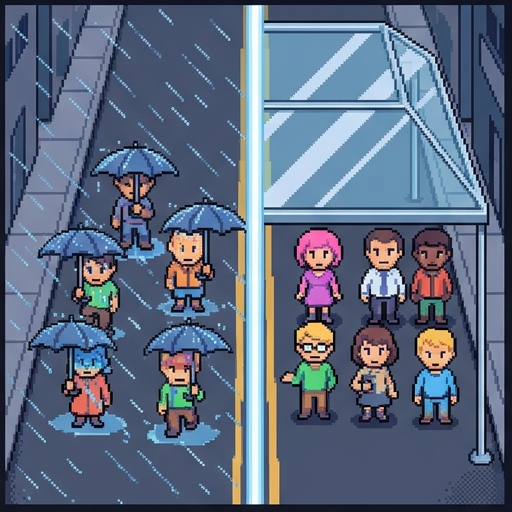
The Weak Reading
First, the weak reading.
- On the weak reading, privacy still belongs to each person. It just cannot be protected one person at a time.
- Clean air works the same way. Your lungs are yours, but you cannot keep the air clean by yourself.
- So the weak reading asks for rules that cover everyone, in place of millions of separate "I agree" buttons.
- One example: a 2008 US law bars health insurers and most employers from using genetic results against anyone, tested or not.
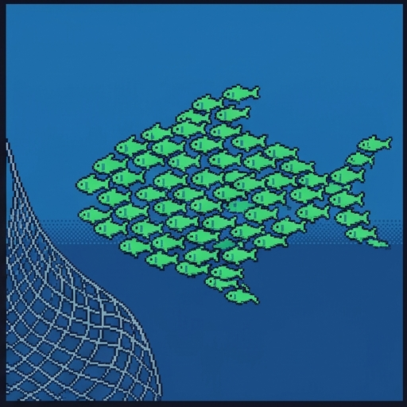
The Strong Reading
Now, the strong reading.
- On the strong reading, which Luciano Floridi defends, the group itself has a right to privacy beyond its members' rights.
- We already accept some group rights. A nation can have a right to govern itself that no single citizen has.
- The fitness map fits this reading. The secret was the base's, and no one runner could have kept it or given it away.
- Some groups exist only in a database, such as "people who shop like Nell." Their members do not know they belong.
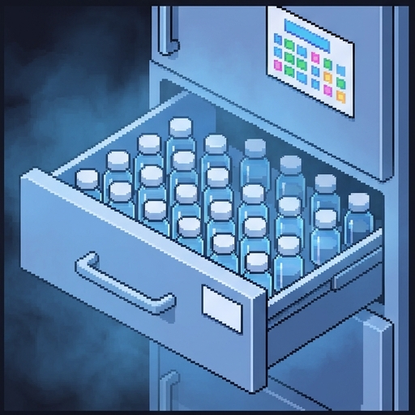
The Havasupai Case
This next case is serious. It involves real people, and it has no characters on it.
- The Havasupai are a Native American tribe who live in the Grand Canyon. Many members have diabetes.
- Starting in 1990, members gave blood to university researchers for a study of diabetes.
- Researchers later used the samples to study mental illness, inbreeding, and where the tribe's ancestors came from.
- The tribe sued. In 2010 the university paid $700,000, apologized, and returned the samples.
The findings were about the whole tribe, whoever had given blood. That is why the case is used to support the strong reading.
Weak Reading vs. Strong Reading
Both readings say consent from one person at a time is not enough. They disagree about who holds the right.
Both readings say consent from one person at a time is not enough. They disagree about who holds the right. The weak reading is about shared protection. Each person holds the right. Rules protect everyone together, because nobody can do it alone. For example, a law limiting what companies may do with anyone's DNA. The strong reading is about shared ownership. The group holds the right. Its members cannot give it away one at a time. For example, a tribe must agree before its samples are studied, whatever each donor signed.
Each person holds the right. Rules protect everyone together, because nobody can do it alone.
Example: a law limiting what companies may do with anyone's DNA.
The group holds the right. Its members cannot give it away one at a time.
Example: a tribe must agree before its samples are studied, whatever each donor signed.
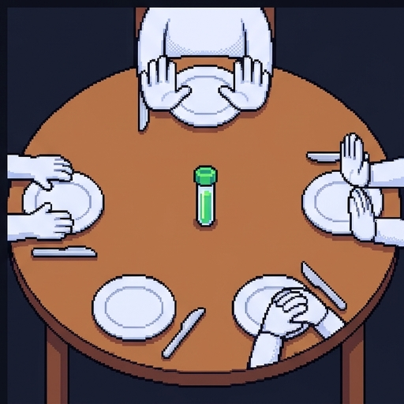
Four Problems for a Group Right
A group right faces four problems.
- Who is the group? A tribe has a council. "People who shop like Nell" have no meetings and no list of members.
- Who speaks for it? Families disagree. If Nell says no and her brother says yes, somebody loses.
- What about Cora? A group right would let Nell stop Cora from learning about her own body.
- What is lost? A killer was caught through his cousins' DNA. Medical research depends on pooled data.
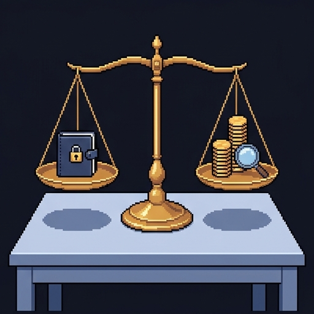
Three Questions to Keep Apart
When someone learns about Nell from other people's data, ask three separate questions.
When someone learns about Nell from other people's data, ask three separate questions.
- Was something learned? Often yes. Tube, Tally, Buzz, and Peep all know more than Nell told anyone.
- Was it wrong? That may depend on the use. Catching a killer and raising an insurance price are different things.
- Was it a privacy wrong? If Nell is charged more because of a guess, the wrong may be unfair treatment, not lost privacy.
- A group right to privacy is one answer. Rules against unfair uses of data are another, and they need no new kind of right.
Name That View
Which view is each speaker taking? Sort each quote into a column, then press Check answers.
The control view
The weak reading
The strong reading
"Nobody may collect or share my information unless I agree."
"You clicked 'I agree,' so nothing was taken from you without your say."
"Nobody can guard their privacy alone any more. It is still theirs, and the law must guard it for all of us at once."
"My lungs are mine, but I can't keep the air clean by myself. Privacy is like that."
"Each donor signed, but that isn't enough. The tribe as a whole must agree before its samples are studied."
"The base's location was the unit's secret. No single runner could have kept it or given it away."
The control view protects each person through their own consent. The weak reading protects it with rules for everyone. The strong reading gives the right to the group itself.
Your Call
Should Cora need her close relatives' agreement before she takes a DNA test? This one isn't graded. Pick the answer closest to your view, and read its note.
No. It is her body and her information.
No, but the law should limit how her results are used.
Yes. Her DNA is partly theirs.
She should tell them, but the choice is hers.
Each answer gives something up. Now, let's see whether your views have changed.
Where You Stand Now
These are your ratings from the start. Rate each statement again.
These are your ratings from the start. Rate each statement again, then press Submit.
Saved. Here's a quick recap.
What the Gadgets Knew
Here's what the gadgets knew, and what it means.
- The control view says privacy is your say over information about you, protected by consent.
- Others can reveal you in three ways: shared data, inference from people like you, and devices they own.
- The group view says consent cannot fix this. Its weak reading wants rules for everyone. Its strong reading gives the group the right.
- Critics reply that a good guess is not a violation, and that a group right would overrule its own members.
Nell still has no gadgets. Cora sent her a birthday card this year, with a family tree inside.
For Further Reading
If you'd like to go further, here are some good places to start, each with a note on why it's worth your time. Thanks for playing.
- Alan F. Westin, Privacy and Freedom (Atheneum, 1967). The book behind the control view of privacy.
- Solon Barocas and Helen Nissenbaum, “Big Data’s End Run around Anonymity and Consent,” in Privacy, Big Data, and the Public Good, ed. Julia Lane et al. (Cambridge University Press, 2014). Read online. Why consent fails, and where the tyranny of the minority comes from.
- Brent Mittelstadt, “From Individual to Group Privacy in Big Data Analytics,” Philosophy & Technology 30, no. 4 (2017). Read online. Argues that groups built by algorithms have privacy interests of their own.
- Michelle M. Mello and Leslie E. Wolf, “The Havasupai Indian Tribe Case: Lessons for Research Involving Stored Biologic Samples,” New England Journal of Medicine 363, no. 3 (2010). Publisher’s page. A short account of the Havasupai case and its lessons for research.
- Beate Roessler and Judith DeCew, “Privacy,” Stanford Encyclopedia of Philosophy (rev. 2023). Read online. An overview of the main theories of privacy, including group privacy.
About this lesson. Brendan Shea, PhD, wrote this lesson with help from AI tools. Claude (Anthropic) helped draft the text and code and check facts, and the illustrations were made with AI image generators. The narrator's voice is synthetic (Microsoft text-to-speech). The author reviewed everything and is responsible for any errors.